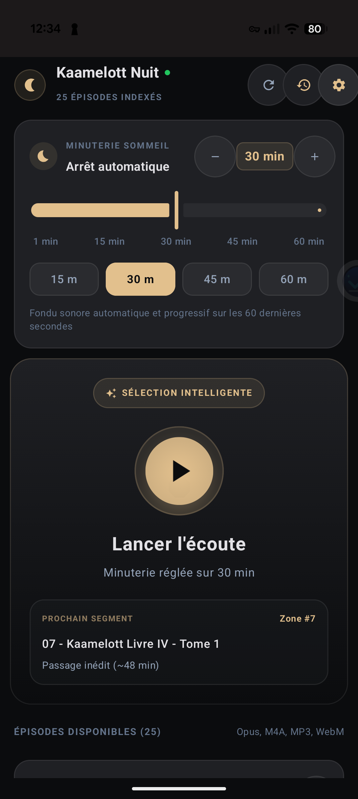
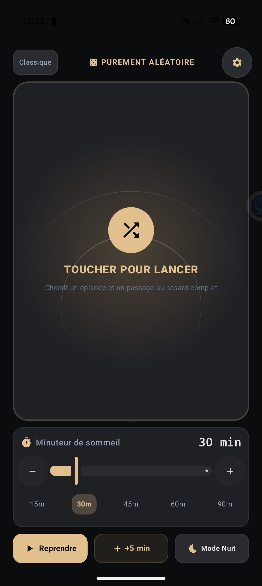

Kaamelott Nuit
Une appli pour écouter vos épisodes de Kaamelott au coucher. Vous choisissez le dossier audio, elle choisit un passage et s’arrête après le temps que vous avez réglé.
Télécharger l’APK Android ↓

Ce que fait l’app
Ça varie les plaisirs
La sélection intelligente favorise les épisodes et passages moins écoutés. Histoire de ne pas entendre la même réplique tous les soirs. Un mode purement aléatoire est aussi disponible.
Ça sait s’arrêter
Réglez le minuteur à votre convenance : la lecture s’arrête automatiquement, avec un fondu sonore en fin de séance.
Ça calme les trompettes
Le mode Nuit atténue les aigus et adoucit le début des pistes. Les fanfares restent dans l’histoire, mais essaient de moins entrer dans votre chambre.
L’application ne contient aucun épisode. Utilisez vos propres fichiers audio, dans un dossier du téléphone, avec les droits nécessaires. Projet non officiel, sans affiliation avec les créateurs ou ayants droit de Kaamelott.
Vérifier l’APK
SHA-256 : f89517aa06dd4e6ec70f88cb5829dbc6690ac5a62eb7dfd978262db0f3c534bc